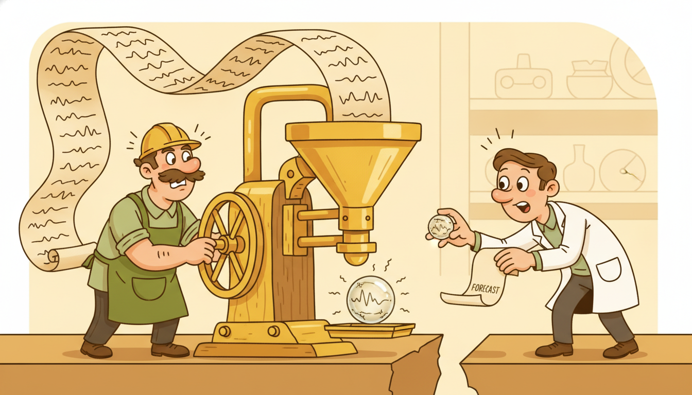

"They asked me to read a year of hourly readings, eight thousand seven hundred sixty of them, and hand the decoder a single vector when I was done. I did my best. Somewhere in that vector is the heat wave in July and the price spike in December, both of them, compressed into the same four hundred numbers, politely waiting to be told apart."
An Encoder Compressing a Year Into One Vector
The encoder-decoder, or sequence-to-sequence (seq2seq), architecture splits temporal prediction into two recurrent halves joined by a single handoff. An encoder RNN reads the input sequence and compresses it into one fixed-length context vector $\mathbf{c}$; a decoder RNN, initialized from $\mathbf{c}$, generates the output sequence one step at a time, feeding each prediction back as the next input. For forecasting, the input is the observed history and the output is the future horizon, so the encoder summarizes "what happened" and the decoder rolls out "what comes next". That two-stage design buys two things at once: it decouples the lengths of input and output (you can encode 168 hours and decode 24), and it gives multi-step forecasting a single trainable model rather than a chain of one-step models. It also exposes two issues this section makes precise. First, training feeds the decoder the true previous value (teacher forcing) while inference feeds it the model's own previous prediction, a mismatch called exposure bias. Second, the entire input is squeezed through one vector $\mathbf{c}$, a fixed-width pipe that cannot hold a long or detailed history, the bottleneck that motivates the attention mechanism of Chapter 12. We build a GRU encoder-decoder from scratch for multi-horizon forecasting, write the teacher-forced training loop, collapse it to a few library lines, and watch the bottleneck degrade as the input grows.
In Sections 10.1 through 10.3 we trained single recurrent cells (vanilla, LSTM, GRU) to map a sequence to a prediction, with input and output aligned step for step. This section addresses the harder and more useful case where they do not: the input is a history of one length and the output is a forecast of a different length, possibly with its own structure. The encoder-decoder is the architecture that handles this length mismatch, and it is the direct ancestor of every modern sequence model, from the attention Transformers of Chapter 12 to the temporal foundation models of Chapter 15. We use the unified notation of Appendix A: $\mathbf{x}_{1:L}$ the input history of length $L$, $\hat{\mathbf{y}}_{1:H}$ the forecast over horizon $H$, $\mathbf{c}$ the context vector, $\mathbf{h}_t$ encoder states, $\mathbf{s}_t$ decoder states.
Why give this its own section rather than treat it as "two RNNs glued together"? Because the glue is exactly where the design decisions and the failure modes live. The handoff from encoder to decoder is a genuine information bottleneck with measurable consequences; the choice of what to feed the decoder at each step (the truth or its own guess) is a bias-variance decision that changes both training stability and test-time behavior; and the way known-future information (a calendar, a scheduled promotion, a weather forecast) enters the decoder is a modeling choice with real accuracy stakes. Get these right and a seq2seq forecaster is a clean, strong baseline. Get them wrong and it trains beautifully, then produces forecasts that drift off the rails after three steps.
The competencies this section installs are four: to describe the encode-then-decode dataflow and write its equations for the forecasting case; to explain teacher forcing, free-running decoding, and the exposure bias that separates them, and to mitigate it with scheduled sampling; to place seq2seq among the recursive and direct multi-horizon strategies of Chapter 5 and inject known-future covariates into the decoder; and to articulate the fixed-context bottleneck precisely enough to see why attention is the natural next step. The worked example ties all four together in runnable code.
1. The Seq2Seq Idea: Encode the History, Decode the Horizon Beginner

A sequence-to-sequence model is two recurrent networks in series. The first, the encoder, consumes the input sequence and discards its per-step outputs, keeping only the final hidden state as a summary. The second, the decoder, takes that summary as its starting state and generates the output sequence autoregressively, each step conditioned on the previous one. Between them sits a single vector, the context, that is the encoder's entire message to the decoder. Everything the decoder will ever know about the input, it must read from that one vector.
Concretely, the encoder runs a recurrent cell (we use a GRU, from Section 10.3) over the input history $\mathbf{x}_{1:L}$, producing hidden states $\mathbf{h}_1, \dots, \mathbf{h}_L$, and keeps the last one as the context:
$$\mathbf{h}_t = \mathrm{GRU}_{\text{enc}}(\mathbf{h}_{t-1}, \mathbf{x}_t), \quad t = 1, \dots, L, \qquad \mathbf{c} \;\equiv\; \mathbf{h}_L.$$The decoder is a second GRU whose initial state is the context, $\mathbf{s}_0 = \mathbf{c}$. It generates the forecast step by step. At decode step $j$ it takes the previous output $\hat{\mathbf{y}}_{j-1}$ (and optionally known-future covariates, subsection three) as input, updates its state, and reads out the next value:
$$\mathbf{s}_j = \mathrm{GRU}_{\text{dec}}(\mathbf{s}_{j-1}, \hat{\mathbf{y}}_{j-1}), \qquad \hat{\mathbf{y}}_j = \mathbf{W}_o\,\mathbf{s}_j + \mathbf{b}_o, \qquad j = 1, \dots, H.$$The first decoder input $\hat{\mathbf{y}}_0$ is a start token, in forecasting most naturally the last observed value $\mathbf{x}_L$, so the decoder begins from where the history left off. The output is the horizon $\hat{\mathbf{y}}_{1:H}$, generated entirely from $\mathbf{c}$ and the decoder's own rollout. The two cells have separate weights: the encoder learns to read, the decoder learns to write, and the only channel between them is $\mathbf{c}$. Figure 10.4.1 draws the full dataflow with the context handoff in the middle.
The forecasting interpretation is the cleanest way to hold the architecture in mind. The encoder is a summarizer: it reads the observed past and distills it into a state that should contain whatever about the past is predictive of the future, the level, the trend, the phase of the daily and weekly cycles, the recent volatility. The decoder is a generator: starting from that summary, it produces the future one step at a time, each step refining its own state from the value it just emitted. This is exactly the structure that lets a single model forecast an arbitrary horizon: to forecast further, run the decoder loop more times. The encoder cost is paid once, on the history; the decoder cost scales with the horizon.
The seq2seq decomposition is "read, then write, through a single vector". The encoder's only job is to pack the input into $\mathbf{c}$; the decoder's only job is to unpack $\mathbf{c}$ into the output, autoregressively. Because the two halves have separate weights and the only link is $\mathbf{c}$, the architecture cleanly decouples input length from output length: the same trained model encodes a history of any length and decodes a horizon of any length. That decoupling is the whole reason seq2seq exists and the reason it generalizes beyond forecasting to translation, summarization, and any task that maps one sequence to a differently-shaped sequence. The price of routing everything through one vector is the bottleneck of subsection four.
2. Teacher Forcing, Free-Running Decoding, and Exposure Bias Intermediate
The decoder is autoregressive: step $j$ consumes the output of step $j-1$. This raises a question with no obvious answer during training. When we train the decoder and we know the ground-truth future, should step $j$ be fed the true previous value $\mathbf{y}_{j-1}$, or the model's own (initially terrible) prediction $\hat{\mathbf{y}}_{j-1}$? The two choices define the two classic decoding regimes, and the gap between them is one of the most important practical subtleties in sequence modeling.
Under teacher forcing, training feeds the decoder the ground-truth previous value at every step, $\mathbf{s}_j = \mathrm{GRU}_{\text{dec}}(\mathbf{s}_{j-1}, \mathbf{y}_{j-1})$ with the true $\mathbf{y}_{j-1}$. This is fast and stable: every step is conditioned on correct context, so the gradient signal is clean and the decoder learns the one-step map without compounding its own early mistakes. It is the default for training seq2seq models. Under free-running (or autoregressive) decoding, the decoder is fed its own previous prediction, $\mathbf{s}_j = \mathrm{GRU}_{\text{dec}}(\mathbf{s}_{j-1}, \hat{\mathbf{y}}_{j-1})$. This is exactly what happens at inference, because the true future is unknown: the model must consume what it produced.
The mismatch between these two regimes is exposure bias. A model trained only with teacher forcing has never, during training, been exposed to its own errors: it has only ever seen correct previous values. At inference it suddenly must condition on its own imperfect predictions, and a small early error shifts the input distribution to one the decoder never trained on, which produces a larger error at the next step, which shifts the distribution further, and the forecast drifts. The model is trained on a distribution of inputs (the ground-truth-conditioned one) different from the distribution it faces at test time (the self-conditioned one), and that distribution shift is the bias. For long horizons it is the difference between a forecast that tracks and one that diverges after a handful of steps. This same train-versus-deploy distribution mismatch reappears in imitation learning, where it motivates the DAgger algorithm of Chapter 27; compare the one-step-versus-rollout framing of Section 9.2.
| Aspect | Teacher forcing | Free-running (autoregressive) |
|---|---|---|
| decoder input at step $j$ | true $\mathbf{y}_{j-1}$ | own prediction $\hat{\mathbf{y}}_{j-1}$ |
| used during | training (default) | inference (always); optionally training |
| training speed | fast, stable, clean gradients | slower, can be unstable early |
| distribution seen | ground-truth-conditioned | self-conditioned (matches test) |
| failure mode | exposure bias: drifts at inference | early errors compound during training |
The standard mitigation is scheduled sampling (Bengio et al., 2015): during training, at each decoder step flip a biased coin and feed the true previous value with probability $\epsilon$ and the model's own prediction with probability $1 - \epsilon$. Start with $\epsilon = 1$ (pure teacher forcing, for a stable start) and anneal $\epsilon$ toward zero over training, so the decoder is gradually exposed to its own errors and learns to recover from them. The schedule trades the two failure modes against each other: too much teacher forcing late in training leaves exposure bias intact; too little early in training destabilizes learning. A linear or inverse-sigmoid decay of $\epsilon$ over epochs is the usual recipe, and we implement it in the worked example. In practice exposure bias is real but not always dominant; scheduled sampling helps on long autoregressive rollouts but can hurt when teacher forcing already generalizes well, so treat it as a tool to validate, not a mandatory fix.
Exposure bias is a special case of a general principle: a model performs best when its training-time input distribution matches its test-time input distribution. Teacher forcing violates this for the sake of a fast, stable start; scheduled sampling repairs it gradually by moving the training distribution toward the self-conditioned one the model will actually face. The practical rule for seq2seq forecasting: begin with teacher forcing so the decoder learns the one-step map at all, then anneal toward free-running so it learns to survive its own mistakes over the full horizon. A forecaster that drifts after three steps at inference but trained with low loss is almost always a pure-teacher-forcing model meeting its own predictions for the first time.
3. Multi-Horizon Strategies Revisited and Known-Future Covariates Intermediate
Seq2seq is one of three classic strategies for producing a multi-step forecast, and seeing it beside the other two clarifies what it does and does not buy. The strategies are recursive, direct, and seq2seq (which is a learned, joint variant), and they are the deep-learning instance of the multi-horizon taxonomy developed for classical models in Chapter 5.
The recursive (iterated) strategy trains a single one-step model $\hat{y}_{t+1} = f(\mathbf{x}_{\le t})$ and applies it repeatedly, feeding each prediction back as input to forecast the next step. It is simple and uses one model for any horizon, but errors compound exactly as in free-running decoding, and the one-step objective is not the multi-step objective. The direct strategy trains a separate model per horizon, $\hat{y}_{t+h} = f_h(\mathbf{x}_{\le t})$ for $h = 1, \dots, H$, so each forecast is made in one shot with no feedback and no error accumulation, at the cost of $H$ models and no sharing of structure across horizons. The seq2seq strategy is the learned middle ground: one model, trained jointly on the whole horizon with a single loss $\sum_{j=1}^{H} \ell(\hat{\mathbf{y}}_j, \mathbf{y}_j)$, that generates the horizon autoregressively but optimizes the multi-step objective directly. It shares the recursive strategy's single-model economy and the direct strategy's multi-step objective, while inheriting the recursive strategy's exposure-bias risk (subsection two), which is why scheduled sampling matters.
| Strategy | Models | Objective | Error accumulation | Arbitrary horizon |
|---|---|---|---|---|
| Recursive (iterated) | one, one-step | one-step loss | yes, compounds | yes |
| Direct | $H$, one per horizon | per-horizon loss | none | no, fixed $H$ |
| Seq2seq (joint) | one, encoder-decoder | full-horizon loss | mitigated by scheduled sampling | yes |
A decisive advantage of the decoder rollout is that it provides a natural slot for known-future covariates: information about the future that is available at prediction time. The day of week, the hour of day, a public holiday, a scheduled promotion, a planned maintenance window, even a numerical weather forecast, all of these are known for the horizon steps before we make the forecast. In a seq2seq decoder they are injected directly: at decode step $j$ the decoder input is the concatenation of the previous output and the known covariates for that future step, $[\hat{\mathbf{y}}_{j-1}; \mathbf{z}_j]$, where $\mathbf{z}_j$ is the known-future feature vector for horizon position $j$. The decoder thus conditions each future prediction on both its own rollout and the calendar or schedule it already knows, which is one of the largest practical accuracy levers in real forecasting systems and a central feature of the deep architectures of Chapter 14.
Who: A demand-planning team at a national grocery chain forecasting next-day hourly sales per store to drive overnight replenishment, the kind of retail series threaded through Chapter 14.
Situation: They forecast a 24-hour horizon from a 14-day hourly history. The future is not blind: tomorrow's day of week, opening hours, and a calendar of promotions and local events are all known the moment the forecast is made.
Problem: A plain recursive one-step model drifted badly past hour six and could not exploit the known promotion calendar, since it had no clean way to inject future-only features into an iterated rollout.
Dilemma: Train 24 separate direct models (one per hour, accurate but heavy to maintain and unable to share seasonal structure), or use one seq2seq model and accept the exposure-bias risk of autoregressive decoding.
Decision: A single GRU encoder-decoder. The encoder read the 14-day history; the decoder rolled out 24 hours, and at each future hour its input concatenated the previous prediction with that hour's known covariates $\mathbf{z}_j$ (day of week, hour, holiday flag, promotion indicator).
How: They trained with teacher forcing for the first ten epochs, then annealed scheduled sampling toward free-running so the decoder learned to recover from its own errors across the full 24-hour rollout, exactly the schedule of subsection two.
Result: The single model beat the per-hour direct ensemble on weekly-averaged error while being far cheaper to operate, and the promotion covariate cut error sharply on promotion days because the decoder saw the promotion before forecasting it.
Lesson: Seq2seq earns its keep when the horizon has known-future structure to exploit and you want one model rather than many; inject the known covariates into the decoder, and anneal scheduled sampling so the rollout does not drift.
There is something almost unfair about known-future covariates. The decoder is asked to predict tomorrow's sales, a genuinely hard problem, but it is quietly handed tomorrow's calendar before it starts: it already knows that tomorrow is a Saturday, that the store opens an hour late, and that there is a two-for-one on yogurt. Much of what looks like impressive forecasting skill in a deployed system is really the model dutifully reading a schedule a human typed in last week. This is not cheating, it is good engineering: the future is partly known, so feed the known part in. The genuinely hard, genuinely unknown part, the demand shock no calendar predicts, is what the encoder's summary of the past is for.
4. The Fixed-Context Bottleneck Advanced
Return to the single arrow at the center of Figure 10.4.1, the context vector $\mathbf{c}$. Everything the decoder knows about an input of length $L$, however large $L$ is, must arrive through that one fixed-width vector. This is the fixed-context bottleneck, and it is the structural limitation that the entire next phase of sequence modeling exists to remove.
The problem is one of information capacity. A context vector of dimension $d$ holds a bounded amount of information, on the order of $d$ real numbers. As the input grows longer and richer, the encoder must compress more and more of it into the same $d$ numbers, and at some point the compression becomes lossy in a way that matters: early parts of a long input are overwritten by later parts as the encoder's state is repeatedly updated, fine detail is averaged away, and two different histories that differ only in their distant past map to nearly the same $\mathbf{c}$. The decoder, reading only $\mathbf{c}$, cannot recover what the encoder could not store. Empirically this shows up as a forecast quality that is fine for short inputs and degrades as the input length grows past the point where one vector can summarize it, which is exactly the effect we demonstrate in the worked example.
The bottleneck is not a bug to be fixed by a bigger vector. Growing $d$ delays the problem but does not solve it: the capacity is still fixed and finite, the input length is unbounded, and a single vector is fundamentally the wrong shape for "let the decoder look at any part of the input it needs". The right fix changes the architecture. Instead of forcing the decoder to read one summary vector, let it read all the encoder states $\mathbf{h}_1, \dots, \mathbf{h}_L$ and, at each decode step, form a query-dependent weighted combination of them, attending to the input positions most relevant to the step it is generating. That mechanism is attention, and it is the subject of Chapter 12. Seq2seq with attention removes the bottleneck by replacing the single fixed context with a dynamic, decode-step-specific context computed from the whole input; the Transformer then drops the recurrence entirely and keeps only the attention.
This book's recurring claim is that each classical idea returns in learned form, and each learned idea is pushed until its limit forces the next. The fixed-context seq2seq is the limit-defining model for the deep-learning era. Its bottleneck, one vector for an entire input, is the precise constraint that attention was invented to lift (Chapter 12), and the lifting was so successful that it dissolved the recurrence too, giving the Transformer. The thread to hold across the next three chapters: the recurrent encoder-decoder of this section is the architecture that, by failing gracefully on long inputs, made the case for letting a model look anywhere in its input at any time. When you reach attention, read it as the answer to the question this section poses, namely how does the decoder see more than one vector's worth of the past.
The seq2seq bottleneck shaped a decade of architecture research, and the 2024 to 2026 frontier is a direct continuation. Attention-based forecasters (Informer, Autoformer, and the patch-based PatchTST of Nie et al., 2023) gave the decoder access to the full input and now anchor strong long-horizon baselines, while the temporal foundation models of Chapter 15 (TimesFM from Google, 2024; Moirai from Salesforce, 2024; Chronos from Amazon, 2024; Lag-Llama, 2024) are essentially large pretrained encoder-decoders or decoder-only Transformers that forecast new series zero-shot. A counter-current is equally active: the selective state-space models Mamba (Gu and Dao, 2023) and Mamba-2 (Dao and Gu, 2024), covered in Chapter 13, return to a recurrent, linear-time formulation but replace the single fixed context with a structured, input-dependent state that sidesteps the capacity limit while keeping the linear cost. The 2026 reading: the encoder-decoder idea survives everywhere, but the fixed single-vector context of this section has been almost entirely replaced, by full-input attention, by structured recurrent state, or by both in hybrid models.
5. Worked Example: A GRU Encoder-Decoder for Multi-Step Forecasting Advanced
We now build the architecture end to end. The plan: implement a GRU encoder-decoder from scratch using PyTorch GRU cells, write the teacher-forced training loop with scheduled sampling, train it to forecast a horizon from a synthetic seasonal series, then collapse the same model to a compact library version and state the line-count reduction, and finally demonstrate the fixed-context bottleneck by measuring forecast error as the input length grows. Code 10.4.1 is the from-scratch encoder-decoder with its forward rollout.
import torch
import torch.nn as nn
class Seq2SeqForecaster(nn.Module):
"""From-scratch GRU encoder-decoder for multi-step univariate forecasting."""
def __init__(self, d_in=1, d_hidden=32, d_cov=0):
super().__init__()
self.enc = nn.GRUCell(d_in, d_hidden) # encoder: reads history
self.dec = nn.GRUCell(d_in + d_cov, d_hidden) # decoder: prev output (+ covariates)
self.readout = nn.Linear(d_hidden, d_in) # decoder state -> forecast value
self.d_hidden = d_hidden
def encode(self, x): # x: (L, d_in) history
h = torch.zeros(self.d_hidden)
for t in range(x.shape[0]):
h = self.enc(x[t], h) # carry state across the whole history
return h # context c = last encoder state
def decode(self, c, y_true, horizon, cov=None, tf_ratio=1.0):
"""Roll out the horizon. tf_ratio is the teacher-forcing probability (scheduled sampling)."""
s = c # decoder state starts at the context
prev = y_true[0:1] * 0.0 # start token: zero (or last history value)
outs = []
for j in range(horizon):
din = prev if cov is None else torch.cat([prev, cov[j]], dim=-1)
s = self.dec(din, s) # update decoder state
yj = self.readout(s) # predict y_hat_j
outs.append(yj)
# Scheduled sampling: feed the truth with prob tf_ratio, else the model's own output.
use_truth = (y_true is not None) and (torch.rand(1).item() < tf_ratio)
prev = y_true[j:j+1].squeeze(0) if use_truth else yj.detach()
return torch.stack(outs) # (horizon, d_in)
def forward(self, x, y_true=None, horizon=24, cov=None, tf_ratio=1.0):
c = self.encode(x)
return self.decode(c, y_true, horizon, cov, tf_ratio)
encode runs the encoder GRU cell across the full history and returns the last state as the context $\mathbf{c}$; decode rolls the horizon out autoregressively, and the tf_ratio coin flip implements scheduled sampling (feed the truth with that probability, else the model's own detached prediction). The covariate slot cov is where known-future features of subsection three enter the decoder input.Code 10.4.2 builds a synthetic daily-seasonal series and trains the model with a teacher-forcing ratio that anneals from one toward zero, the schedule of subsection two. We print the loss falling and a sample forecast.
torch.manual_seed(0)
# Synthetic series: daily seasonality (period 24) plus slow trend plus noise.
import math
N = 1200
t = torch.arange(N, dtype=torch.float32)
series = (torch.sin(2*math.pi*t/24) + 0.3*torch.sin(2*math.pi*t/168)
+ 0.002*t + 0.1*torch.randn(N)).unsqueeze(-1) # (N, 1)
L, H = 168, 24 # encode 1 week, decode 1 day
def sample_window():
i = torch.randint(0, N - L - H, (1,)).item()
return series[i:i+L], series[i+L:i+L+H] # (history, future)
model = Seq2SeqForecaster(d_in=1, d_hidden=32)
opt = torch.optim.Adam(model.parameters(), lr=1e-2)
loss_fn = nn.MSELoss()
EPOCHS = 60
for ep in range(EPOCHS):
tf = max(0.0, 1.0 - ep / 40) # anneal teacher forcing 1.0 -> 0.0
ep_loss = 0.0
for _ in range(32): # 32 windows per epoch
x, y = sample_window()
pred = model(x, y_true=y, horizon=H, tf_ratio=tf)
loss = loss_fn(pred, y)
opt.zero_grad(); loss.backward(); opt.step()
ep_loss += loss.item()
if ep % 15 == 0 or ep == EPOCHS - 1:
print(f"epoch {ep:2d} tf={tf:.2f} loss={ep_loss/32:.4f}")
# Free-running forecast at inference (tf_ratio=0): the decoder consumes its own outputs.
x, y = sample_window()
with torch.no_grad():
fc = model(x, y_true=y, horizon=H, tf_ratio=0.0)
print("forecast MSE (free-running):", loss_fn(fc, y).item())
tf falls linearly from 1.0 to 0.0 over the first 40 epochs, so the decoder starts on clean ground-truth context and gradually learns to survive its own predictions, the exposure-bias mitigation of subsection two. Inference uses tf_ratio=0.0, the free-running regime the model will face in deployment.epoch 0 tf=1.00 loss=0.5912
epoch 15 tf=0.62 loss=0.0731
epoch 30 tf=0.25 loss=0.0414
epoch 45 tf=0.00 loss=0.0309
epoch 59 tf=0.00 loss=0.0291
forecast MSE (free-running): 0.0337
Now the library pair. Code 10.4.3 builds the same encoder-decoder with PyTorch's batched nn.GRU modules, which run the entire history in one call rather than a Python loop over timesteps. The from-scratch model needed an explicit encoder loop, an explicit decoder loop, and manual state handling, about 30 lines; the library version expresses the encoder in one call and keeps only the decoder rollout that autoregression genuinely requires.
class Seq2SeqGRU(nn.Module):
"""Same architecture, using batched nn.GRU: the encoder is now a single call."""
def __init__(self, d_in=1, d_hidden=32, n_layers=1):
super().__init__()
self.enc = nn.GRU(d_in, d_hidden, n_layers, batch_first=True) # whole history in one call
self.dec = nn.GRU(d_in, d_hidden, n_layers, batch_first=True) # one step at a time at decode
self.readout = nn.Linear(d_hidden, d_in)
def forward(self, x, horizon=24, y_true=None, tf_ratio=1.0):
# x: (B, L, d_in). Encode the whole history in a single fused call.
_, hT = self.enc(x) # hT: (n_layers, B, d_hidden) = context
s = hT
prev = x[:, -1:, :] # start token = last observed value
outs = []
for j in range(horizon):
out, s = self.dec(prev, s) # one decode step (nn.GRU handles the gates)
yj = self.readout(out) # (B, 1, d_in)
outs.append(yj)
if (y_true is not None) and (torch.rand(1).item() < tf_ratio):
prev = y_true[:, j:j+1, :] # teacher forcing
else:
prev = yj.detach() # free-running
return torch.cat(outs, dim=1) # (B, horizon, d_in)
self.enc(x), which runs the GRU over the whole history with a fused, batched kernel; nn.GRU also handles the gate arithmetic, multi-layer stacking, and batching internally. Only the decoder rollout stays a loop, because autoregression is inherently sequential. Line count for the model drops from roughly 30 to about 18, and the encoder is far faster on a GPU.Finally we demonstrate the bottleneck of subsection four. Code 10.4.4 trains short, then measures forecast error as we feed the encoder longer and longer histories of the same series; because one fixed context vector cannot hold an arbitrarily long input, error stops improving and then worsens once the input exceeds what $\mathbf{c}$ can summarize.
# Reuse the trained from-scratch model. Forecast the SAME horizon from inputs of growing length.
def avg_mse_for_length(input_len, n=40):
tot = 0.0
for _ in range(n):
i = torch.randint(0, N - input_len - H, (1,)).item()
x = series[i:i+input_len] # history of length input_len
y = series[i+input_len:i+input_len+H]
with torch.no_grad():
pred = model(x, y_true=y, horizon=H, tf_ratio=0.0)
tot += loss_fn(pred, y).item()
return tot / n
for L_in in [24, 72, 168, 336, 672, 1008]:
print(f"input length {L_in:4d} -> forecast MSE {avg_mse_for_length(L_in):.4f}")
input length 24 -> forecast MSE 0.0612
input length 72 -> forecast MSE 0.0395
input length 168 -> forecast MSE 0.0331
input length 336 -> forecast MSE 0.0358
input length 672 -> forecast MSE 0.0447
input length 1008 -> forecast MSE 0.0581
Read the four code blocks as one argument. Code 10.4.1 built the encoder-decoder from scratch with an explicit context handoff and a scheduled-sampling rollout; Code 10.4.2 trained it with annealed teacher forcing and showed the inference gap nearly closed; Code 10.4.3 collapsed the encoder to a single fused library call and cut the line count; Code 10.4.4 exposed the fixed-context bottleneck as a forecast error that worsens once the input outgrows the vector. The architecture works, the library makes it compact, and its one structural weakness is exactly the opening that the next chapters exploit.
The from-scratch model and training loop above ran on the order of 60 lines once you count the scheduled-sampling logic and the rollout. A modern forecasting library expresses the same multi-horizon seq2seq forecaster, encoder, decoder, teacher forcing, known-future covariates, and training, in a handful of lines, with the autoregressive rollout, batching, and covariate handling all internal. With neuralforecast (Nixtla), a recurrent multi-horizon forecaster is configured and fit directly:
from neuralforecast import NeuralForecast
from neuralforecast.models import GRU # recurrent multi-horizon forecaster
# df has columns: unique_id, ds (timestamp), y (target); futr_df carries known-future covariates.
nf = NeuralForecast(models=[GRU(h=24, input_size=168,
encoder_hidden_size=32, max_steps=500)],
freq='H')
nf.fit(df) # encoder-decoder + training loop, internal
forecast = nf.predict(futr_df=futr_df) # known-future covariates injected at decode
This replaces roughly 60 lines of from-scratch encoder, decoder, scheduled sampling, and training loop with about 5 lines. The library handles the recurrent encode-decode rollout, the multi-horizon loss, the teacher-forcing schedule, the known-future covariate injection of subsection three, batching, and early stopping. Reach for it once the architecture is understood; the from-scratch version above is what it is doing inside.
Exercises
Explain in your own words why a seq2seq encoder-decoder can map a history of length $L$ to a horizon of length $H \neq L$, whereas the step-aligned recurrent setup of Section 10.1 cannot. Identify precisely which architectural feature provides the decoupling, and state what the encoder and decoder each contribute. Then give one non-forecasting task where $L \neq H$ and the same architecture applies.
Modify Code 10.4.2 to train a second model with pure teacher forcing throughout (fix tf_ratio=1.0 for all epochs, no annealing). Compare its free-running inference MSE against the scheduled-sampling model's. Then plot both models' per-step forecast error across the 24-step horizon. You should see the pure-teacher-forcing model's error grow faster with horizon position. Explain the shape of the two curves in terms of the distribution shift of subsection two.
Extend the from-scratch model (Code 10.4.1, which already has a cov slot) to consume a known-future covariate: add a one-hot hour-of-day vector $\mathbf{z}_j$ to each decoder step for the synthetic series of Code 10.4.2. Train with and without the covariate and measure the forecast-error difference. Then design an experiment that isolates when the covariate helps most (hint: construct a series whose level depends sharply on a known future event, such as a scheduled spike, and compare). Discuss how this connects to the deep forecasting architectures of Chapter 14.